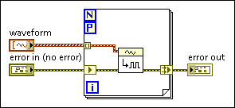

In a For Loop with parallel iterations enabled, LabVIEW uses error registers to pass error clusters through the loop. Error registers support the error handling that occurs at each iteration of the loop independent of when each iteration executes.
An error register appears as a pair of terminals on the sides of a parallel For Loop, as shown in the following block diagram.

The left side terminal of the error register behaves like a non-indexing input tunnel and produces the same value on every iteration. The right side terminal of the error register merges the values of each iteration such that the error or warning value from the earliest iteration, by index, is the output value of the error register. If the For Loop iterates zero times, the value you wire into the left side tunnel carries forward to the output on the right side tunnel.
LabVIEW preserves the best practice of flowing errors through a shift register by automatically converting shift registers to error registers when you configure parallel iterations on a For Loop. You can also change the tunnel type by right-clicking the tunnel and selecting the type of tunnel to create.